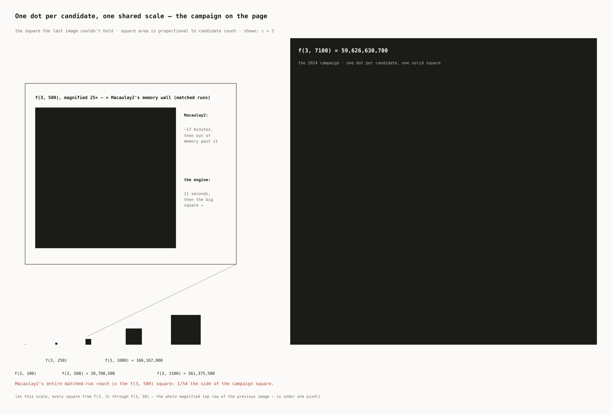

Algebra search engine
The search it ran, what it found, and how it's built.
01The search
The search began in Macaulay2, but time and memory limited the candidate ranges it could reach. I wrote a compact C++ engine for the same candidate families and checks, then cross-validated its output case by case against the BoijSoederberg package. The larger search found a counterexample pattern that was proved rigorously and became one of the preprint's three main theorems.
The engine supported both sides of that result. Early searches found counterexamples following Pell's equation, an infinite family later proved by number theory. Under a fixed size bound, the search found exactly four cases; the proof checks more than a dozen cases by hand. The useful result was not speed by itself: the larger search changed the range of mathematics the project could inspect.

02Benchmarks
Task-matched runs against an equivalent Macaulay2 implementation: same machine, same candidate families, same checks, program CPU time. On matched searches across codimensions 3–7 the engine runs ~70–115× faster — 1.2 million sequences in about a second versus a hundred, 20.7 million in 11 seconds versus ~17 minutes. Past that it hits the materialize-the-whole-list wall, and on lighter hardware it runs out of memory. The 2024 campaign swept tens of billions of sequences in a handful of overnight runs. Full data.


03The scale of the search
One dot is one candidate: a subset, its degree sequence, one Betti table to test. Drawn on a shared scale, the size of the search becomes visible — and so does how little of it Macaulay2 could reach.




{kind=link}
{kind=link}
04How it's built
The core represents the mathematical structures and runs the calculations, with a recursive enumeration algorithm generating the structures inside it. A performance layer runs the computations and checks them against the conjectures, working within the hardware limits and the difficulty of large-integer arithmetic on a 64-bit processor. The recursive generator works in resumable slices, able to pick up from any point in the space — which is what let the search reach as far as it did.
A snippet from the middle of one routine — notes-to-self included:
//at this point all the fractions are reduced as much as possible, so L will be the lcm of all of them
//question is, if we have (a*b) and (c*d), is lcm((a*b),(c*d)) the same as lcm(lcm(a,c),lcm(b,d))?
//if so, this is good, since we can check L before multiplying out any one denominator, as any given denominator can be very big once fully multiplied out, but if we can go
//factor by factor for each one, we will have a much, much easier time
//lcm(2*3,6*1) = 6, lcm(lcm(2,6),lcm(3,1)) = lcm(6,3) = 6. Seems promising
//IF we can "distribute" lcms like this, then we just update L not with each denominator, but with each iteration of a term in every denominator
//eg if we have denoms (abc), (def), and (xyz), we don't have start with L=1 and do L = lcm(L,abc) then L = lcm(L,def) then check L (since abc and def could each be huge and at risk of
//overflowing), but rather we start with L=1 and do L = lcm(L,a,d,x), then check L, then L = lcm(L,b,e,y), ... and stop if at any point L is big enough to pass the tests
//if L is NOT big enough and we reach the end, does the pass necessarily fail? Could it still work? DO we have to worry abt overflow? Will solve these tomorrow
//NOTE: STL lcm function DOES take more than 2 params
//
//start L calc
int L = 1; //"global" L, lcm of all interim L's
int target = binom(c,c/2);
int warning_val = INT_MAX; //lol sqrt(LLONG_MAX) is just INT_MAX... duh, sqrt(2^64) = sqrt(2^32*2) = sqrt((2^32)^2) = 2^32
if(target > warning_val) cout << "In function test_conjs_v2, target val for L greater than sqrt(LLONG_MAX), overflow likely.\n";
//each denom will have c-1 factors, each of which may or may not be 1
//need to go term by term in each denominator. remember each denominator is .second in a pair, and a vector of pairs makes up a whole pi_i
//CANNOT DO THIS. L MUST BE LCM OF ALL DENOMS, BUT WITHIN A DENOM L MUST BE AT LEAST THE ENTIRE PRODUCT OF THAT DENOM
//What this means is in any one denom, we can check if L would ever be made too big, but if not, L has to become the entire product
vector<int> L_vec(c+1);
L_vec.at(0) = 1; //since pi_0 is just 1/1
int curr_L = 1;
//need to calc an L for each denom, checking at every step, then do lcm of all the L's, again checking at every step
for(int i=1; i<=c; i++){ //for each pi (starting at 1 since pi_0 is just 1/1)
curr_L = 1; //reset curr L
for(int j=0; j<c-1; j++){ //for each factor of the denom
curr_L = curr_L *= pis.at(i).at(j).second;
//each lcm can only make L bigger, so I can actually check intermediately
if(curr_L >= target){
cerr << "An interim L hit " << curr_L << " which is > binom(c,c/2); both conjs autopass.\n";
return true;
}
//curr_L is not too big, push to L vec
L_vec.at(i) = curr_L;
}
// cerr << "After pi_" << i << ", curr L is now " << L << endl;
}
05Ownership
The core is a ~1,200-line C++ engine I wrote by hand in 2024 and cross-validated case-by-case against Macaulay2's own BoijSoederberg package. Its exhaustive search surfaced the counterexamples used in one of the paper's three main theorems.